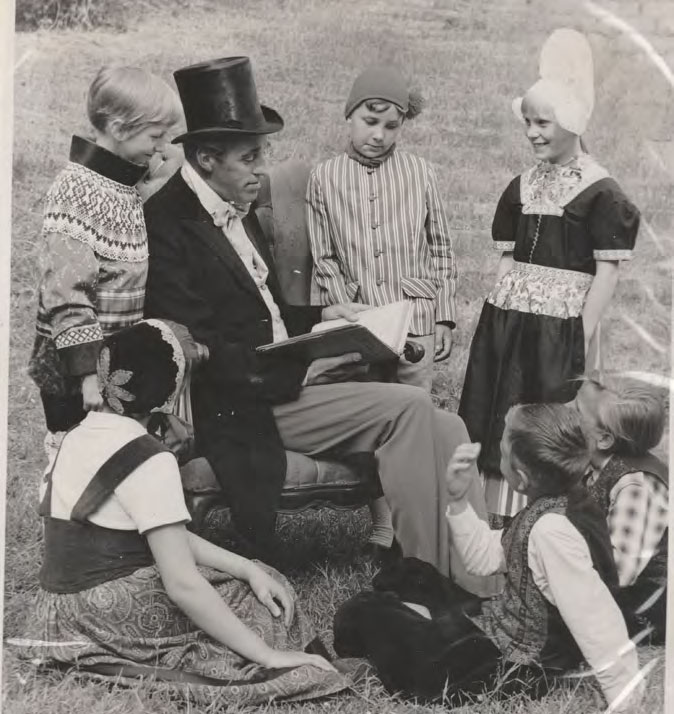

Om os

Begyndelsen på en tradition Den 1. juli 1965 stod hele landsbyen på den anden ende! Der havde vi nemlig premiere på vores første festspil “Svinedrengen”, som var iscenesat og startet på initiativ af skuespilleren Klaus Pagh. Idéen var kommet til ham, da han på en tur til New York havde set en legetante læse eventyr op for børn ved statuen af den berømte digter i Central Park. Klaus Pagh undrede sig over, hvorfor man ikke havde et lignende tiltag herhjemme, og i løbet af efteråret 1964 formede han idéen om at udnytte friluftsscenen i Den Fynske Landsby.